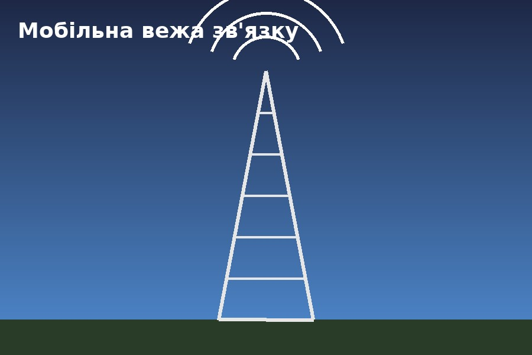
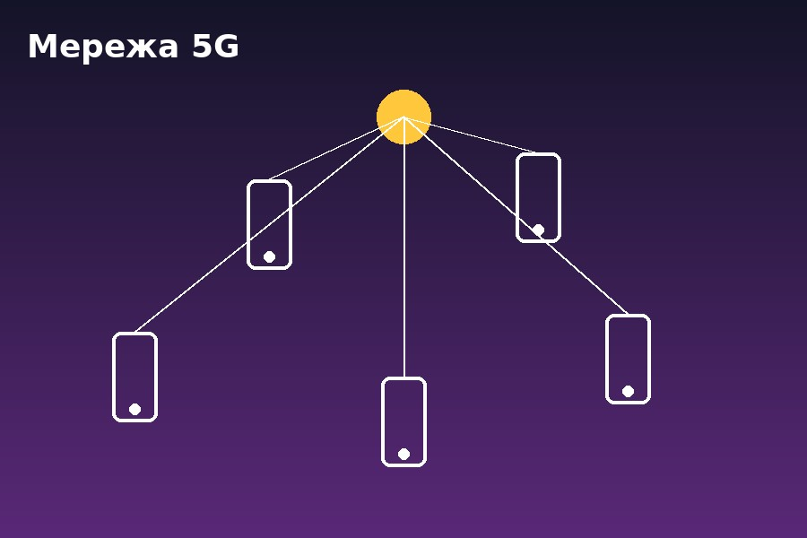

Основні принципи та технології
Мобільні комунікації є фундаментальним складником сучасної глобальної інфраструктури, що базується на принципах мобільного зв'язку та безпроводового передавання даних через радіочастотний спектр.
Еволюція цих технологій — до надшвидкісних мереж 5G та перспективних 6G — забезпечила
перехід від простого обміну голосовими сигналами до високошвидкісного мобільного
інтернету та концепції Інтернету речей (IoT).
Архітектура та наукові аспекти
Функціонування мобільних мереж опирається на складну архітектуру, яка об'єднує базові станції, центри комутації та смартфони для безперервного обслуговування трафіку користувачів, які є мобільними.

З наукової точки зору, оптимізація мобільного зв'язку вимагає вирішення
критичних інженерних завдань, зокрема ефективного кодування каналів,
мінімізації інтерференції та раціонального розподілу обмеженого частотного ресурсу.

Висновки
У підсумку, ця технологічна сфера не лише трансформувала індивідуальні моделі поведінки суспільства, а й стала головним драйвером цифровізації сучасної світової економіки та промисловості.